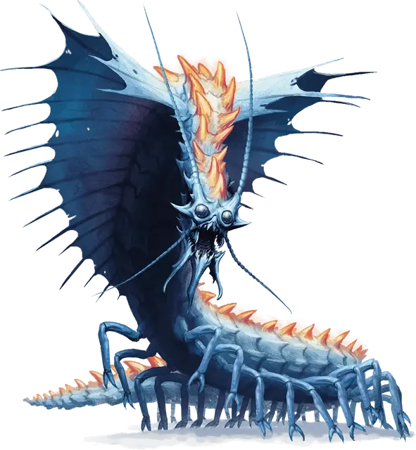

Ремораз
Remorhaz
Огромный Монстр, без мировоззрения

Класс Доспеха 17 (природный доспех)
Хиты 195 (17к12 + 85)
Скорость 30 футов, копая 20 футов
| мод | спас | ||
|---|---|---|---|
| СИЛ | 24 | +7 | +7 |
| ЛОВ | 13 | +1 | +1 |
| ТЕЛ | 21 | +5 | +5 |
| мод | спас | ||
|---|---|---|---|
| ИНТ | 4 | −3 | −3 |
| МДР | 10 | +0 | +0 |
| ХАР | 5 | −3 | −3 |
Иммунитет к урону огонь, холод
Чувства тёмное зрение 60 футов, чувство вибрации 60 футов, пассивное Восприятие 10
Опасность 11 (7200 опыта)
Бонус мастерства +4
Среда обитания Арктика
Особенности
Раскаленное тело. Существо, касающееся ремораза или попадающее по нему рукопашной атакой, находясь в пределах 5 футов от него, получает урон огнём 10 (3к6).
Действия
Укус. Рукопашная атака оружием: +11 к попаданию, досягаемость 10 футов, одна цель. Попадание: Колющий урон 40 (6к10 + 7) плюс урон огнём 10 (3к6). Если цель — существо, она становится схваченной (Сл высвобождения 17). Пока цель схвачена, она опутана, и ремораз не может кусать другую цель.
Проглатывание. Ремораз совершает одну атаку укусом по существу с размером не больше Среднего, схваченному им. Если эта атака попадает, существо получает урон от укуса, становится проглоченным и перестает быть схваченным. Будучи проглоченным, существо ослеплено и опутано, и обладает полным укрытием от атак и прочих эффектов, исходящих снаружи ремораза, и получает урон кислотой 21 (6к6) в начале каждого хода ремораза.
Если ремораз получает за один ход 30 или больше урона от существа, находящегося внутри, ремораз должен в конце этого хода преуспеть в спасброске Телосложения Сл 15, иначе отрыгнет всех проглоченных существ, которые падают ничком в пространстве в пределах 10 футов от ремораза. Если ремораз умирает, проглоченное существо перестает быть опутанным им, и может высвободиться из трупа, потратив 15 футов перемещения, падая при выходе ничком.
Описание
Взрывая толщу снега и льда, в облаке пара на поверхность прорывается пульсирующее внутренним огнём тело ремораза. Расположенные за головой похожие на крылья плавники ярко пышут, а широкая пасть до краев наполнена острыми зубами.
Арктический охотник. Ремораз живет в арктическом климате, охотясь на лосей, белых медведей и других существ, делящих с ним территорию обитания. Он не переносит теплой погоды, приспособившись к холоду путем генерации внутри своего тела тепла, сопоставимого с жаром печи. Во время охоты ремораз зарывается глубоко под снег и лед, ожидая малейших вибраций, создаваемых существами над ним. Находясь в засаде, он понижает температуру тела, чтобы не плавить слой снега над собой.
Молодняк. Охотники ледяных великанов прочесывают ледяные пустоши в поисках гнезд и яиц реморазов. Молодой ремораз является трофеем для великанов, так как его можно научить исполнять команды и охранять чертоги своих хозяев. В отличие от взрослых особей, молодой ремораз вгрызается в свою жертву, а не проглатывает её целиком.
См. также: Молодой ремораз.